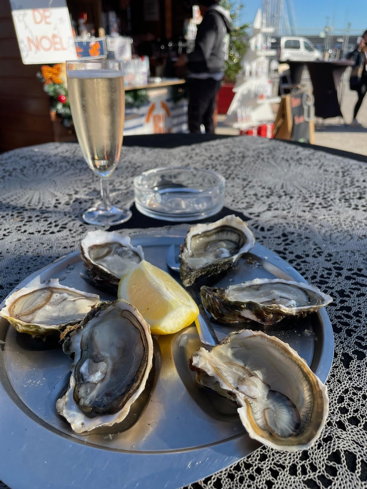
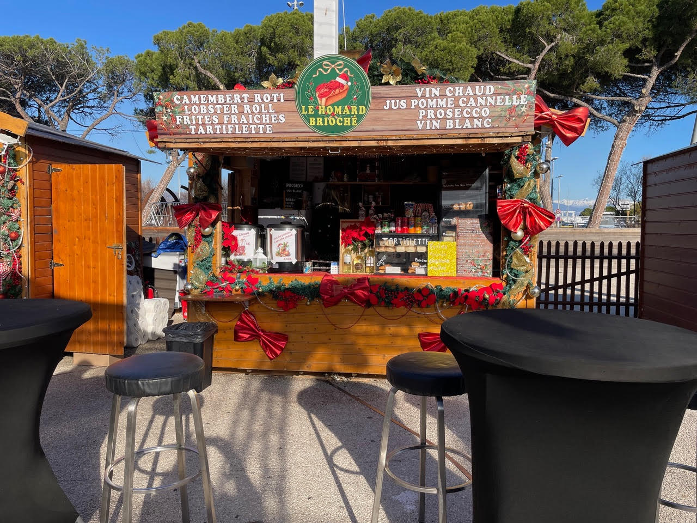
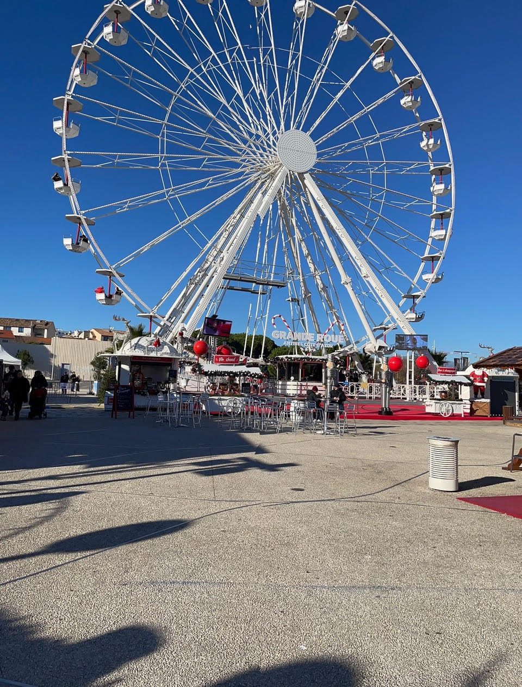
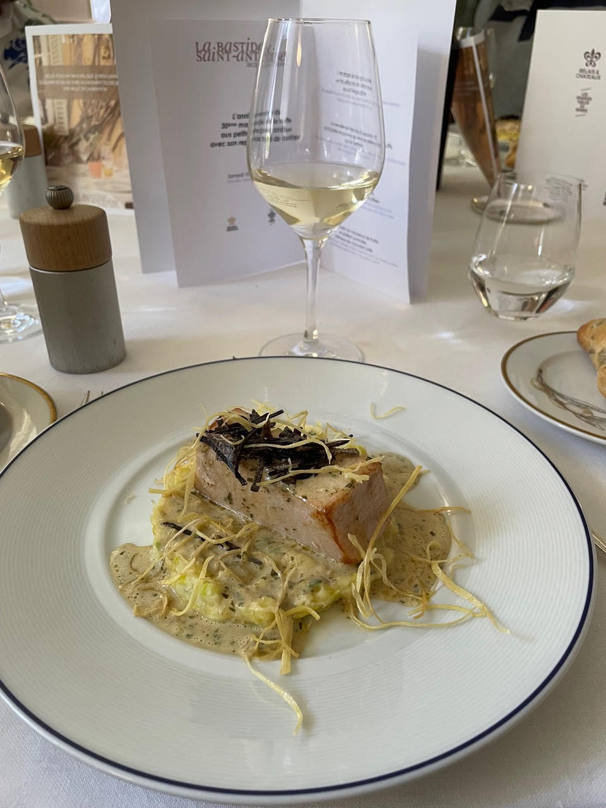
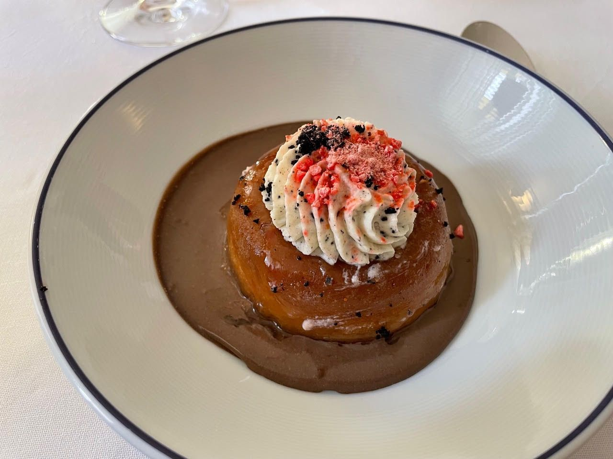
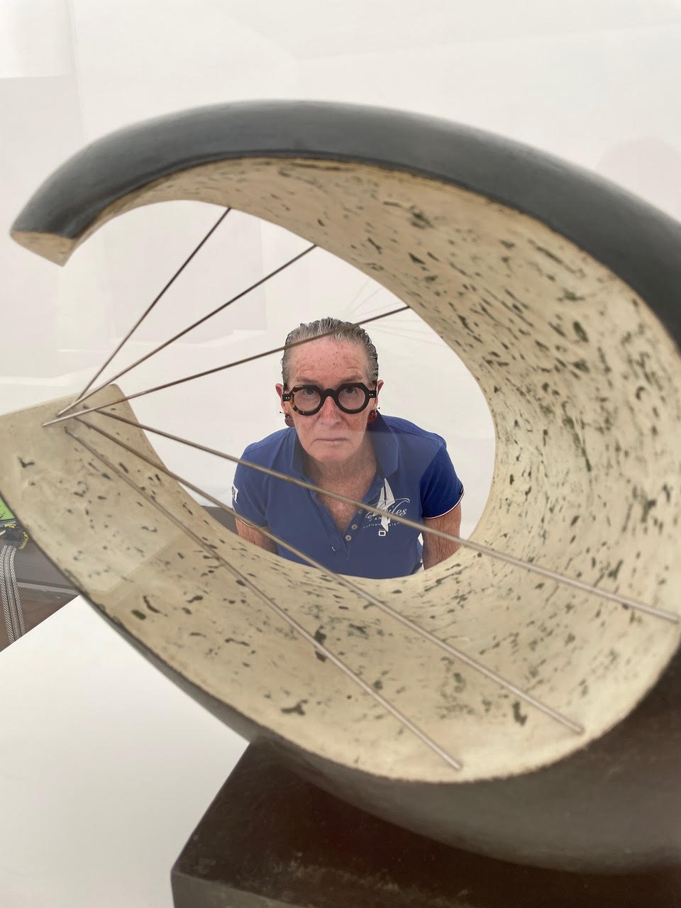
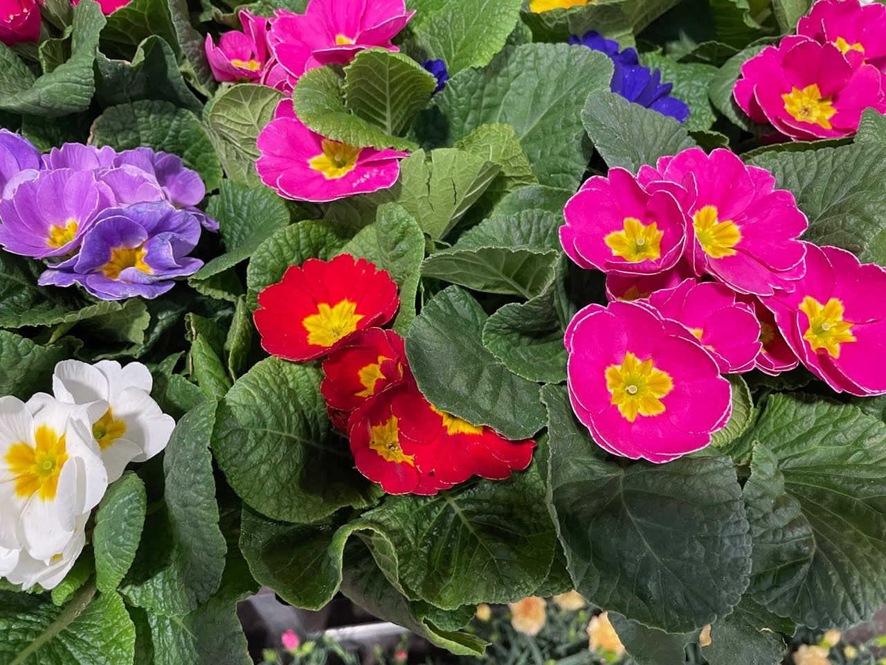

When people think of Antibes they think sun, sea and sand which is what the tourist offices promote but winter on the Riviera is very different from summer on the Riviera and presents its own kind of fun.
Christmas plays a large part in winter in Antibes and the town is transformed from November 29 to January 4 and then there is the build up to Epiphany with the galette des rois or kings' cake. In late November the Christmas Village appears near the port with dozens of huts selling everything from traditional nougat and crepes to cider and trinkets. The day I ventured out into the Christmas Village I could not resist the hut proposing six plump oysters and a glass of champagne for only 15 euros; yes, it was 11:00 in the morning but I could not help but enter into the spirit of the season. Tables and benches are set up between the two rows of huts and yes, as I found out first hand, some are irresistible.


The Ferris wheel is a very popular attraction with an amazing view of the port with hundreds of yachts waiting for the summer and a spectacular view of the mountains in the distance. I have always found it interesting that the Ferris wheel was introduced in Chicago during the Columbian Exposition of 1893 and it is popular to this day although in France it is known as La Grande Roue or Big Wheel. The Carousel has lines of children waiting for a chance to have a ride on a horse or maybe a dolphin with proud parents smiling as their little one laughs with glee.

And then there is the swan fishing pond with prizes for those lucky enough to score by dunking a swan. There are two other spaces not to be missed during this period if you are in the spirit and have the time: the main square is also studded with huts selling candy, Belgian style waffles and not to be missed, vin chaud which is spicy hot wine with a cinnamon stick. The pony rides with colorful tack and gentle manner delight their eager riders.
Cart rides and more vin chaud awaits celebrants in yet a third location with a fairy castle, race car themed carts and chairs at the end of bungee cords that fly around at frightening speed. The fourth location for holiday revelry for the young has more pedal carts of every hue imaginable that race around a track to the delight and shrieks of the miniature drivers who can dream of the annual Formula 1 weekend in Monaco.
What would holiday celebrations be without an opportunity to express your delight in anticipation of the arrival of Pere Noel, Father Christmas? Sign up for an art class and you will find your masterpiece posted along with others around the bandstand making you part of an art exhibition with your friends. After all, Picasso spent time in Antibes and look how he ended up; you can't begin too soon.
Juan les Pins, part of the unit of three towns holds a New Years day swim for the brave and a fireworks display to welcome the new year. Juan les Pins is the birth place of water skiing and every year Pere Noel arrives on water skis just in time for Christmas. It is a spectacle to behold sans Rudolph and the gang.
One of the delights of January is the annual truffle market and lunch at La Bastide Saint-Antoine near Grasse. Chef Jacques Chibois has presided over this event for thirty years and every year it is packed with truffle aficionados. The market sells wine, fois gras, honey, hand made knives and yes, truffles for a shocking price. There are demonstrations of dogs rutting for truffles, brie stuffed camembert, truffle soup and this year truffle cheese cake. Inside the Relais et Chateau establishment tables are set for a four course lunch which naturally starts off with a glass of champagne. Guests are seated at tables of 10; it is fun to have lunch with complete strangers when the only thing you might have in common is liking truffles.
This year's lunch was as festive as always, with the first course of pan seared fois gras on a bed of celeriac with a delicate truffle sauce, followed by roasted swordfish on silky mashed potato with truffled leek and Germiny sauce. Chibois likes to romanticize food and this year was no exception; it was not simply swordfish but "sublime" roasted swordfish. He never disappoints. Next came pork flank with spelt remoulade and chestnut Beluga lentils with black truffles. And then dessert: fine savarin with black truffle mousse, Lyonnaise praline all topped with truffled chocolate cream. It was quite a meal as it always is, accompanied by red and white wine and still and sparkling water.


A trip to the French Riviera would not be complete without lunch on the beach in Cannes, a stroll along the beach side of the Croisette and window shopping along the chock-a-block building side of the Croisette where every top fashion house and jeweler has a boutique and then there is the rue d'Antibes with even more opportunities for retail therapy. The competition among the almost 40 beaches is fierce so the menus are carefully curated, the service is perfect and the lounge chairs chic. We seem to have landed on La Mome Plage which was recommended by the Mondrian Hotel. Each beach restaurant has something that distinguishes it from the others and La Mome Plage in the summer has fans on every table to take home as a souvenir. Colorful umbrellas shield you from the scorching sun in the summer and in the winter on a sunny day the sun is a welcome part of lunch along with the olive oil soaked fresh thyme with a pinch of salt that is prepared table side.
The market in Antibes is usually bustling but after Epiphany when the crowds are gone many merchants take their vacation often for two or three months leaving the market short of stands but long on space. Michel and his crew only show up on weekends but Stephan the butcher and his team are there Tuesday through Sunday with the best meat around. Stephan is also the go to place for a picnic with duck mousse and at least four different terrines including quail and rabbit among the mouth watering choices. Alex and his brother who have the largest and best located cheese stand are there with a fabulous selection of cheese from France and around the world: gouda, emmenthal, munster, parmesan reggiano, cheddar to name a few.
With the market more than half empty of stands I was amused this morning to see a jogger run through the place; in the height of the summer it is hard to simply walk through the market with the hundreds of shoppers and full compliment of stands. The mayor of Antibes would like to alleviate the crush of customers in the market so to that end has tried to eliminate some of the stands in the center aisle; this has made a real difference and made shopping a bit less of a fight in the high season. The flower stands are magnificent with primroses which means spring cannot be far behind.

One of the delights of this area is the Josep Lluis Sert designed Foundation Maeght in the hills just outside the perched village of Saint Paul de Vence. The exhibit this past summer was British superstar Barbara Hepworth whose works cover all the bases: sculpture, drawings, prints and paintings. The current exhibit is from the collection and what a collection it is with Miro taking the lead. At the entrance of the exhibit are two paintings by Alberto Giacometti that made me think what a perfect scarf they would make and indeed, they are paintings for possible scarves; some of his designs were made as scarves and are available today if you do enough research. The exhibit continues with Miro, a great favorite of the Foundation as is witnessed by the Miro sculpture garden. There is the Giacometti Courtyard with sculptures by the great Diego Giacometti, a room devoted to Arman and works by Hartung, Bergman, Tal Coat to name a few constitute the current exhibit with only a handful of the 13,000 works in the permanent collection. The new space designed by Silvio d'Ascia under the existing building inaugurated in 2024 includes four new galleries, two with walls of glass looking out on the gardens and the sea beyond.
After viewing the exhibit lunch at the Colombe d'Or across from the pitch where Yves Montand would play boules with the locals is a must and a lovely time to be with friends and discuss the exhibit.
